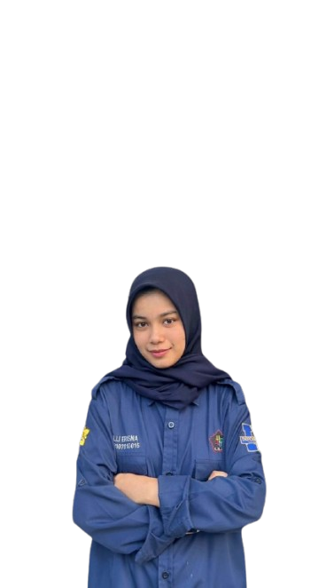

Hi, I'm Yulli Erisna
Informatics Student & Tech Enthusiast
Saya adalah mahasiswa informatika dengan minat di bidang pemrograman, desain UI/UX, dan analisis data. Saya memiliki semangat untuk mengeksplorasi teknologi dan menciptakan solusi inovatif.